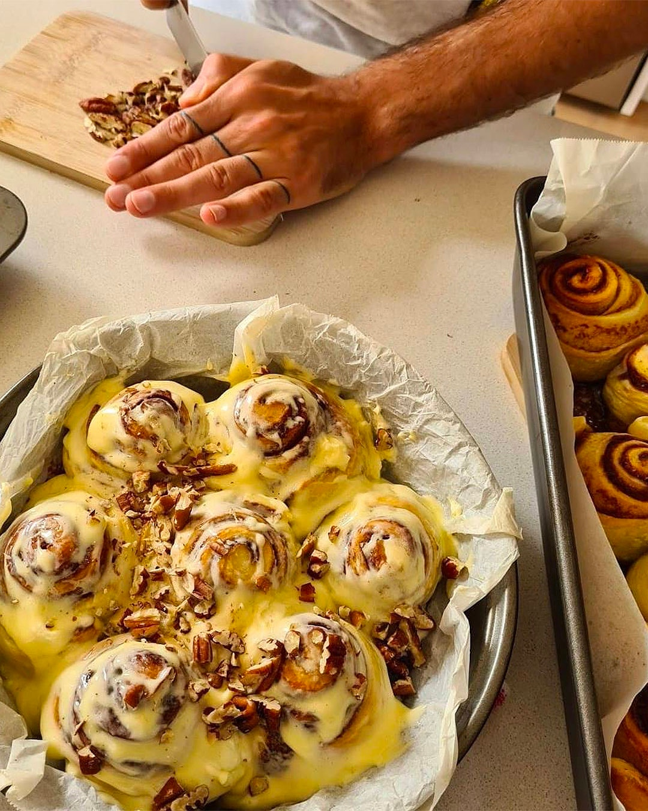

Hill House Cafe

$$
Cinnamon Rolls
Nothing beats a good cinnamon roll. These rolls are so fluffy, it's like you're biting into a cloud. The icing is creamcheese icing which is the
only way to go with a cinnamon roll! Topped with walnuts for that extra crunch and texture. Again this is a little too sweet for me, but that
doesn't stop it from being so good!